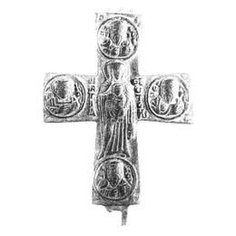

Catalog › CE-0238 · KOR2003-I.1.22
Valvă de revers de encolpion cu Maica Domnului Kyriotissa și patru evangheliști în medalioane
sec. XII (?) (1101–1200) · loc necunoscut · Muzeul Rus de Stat, Sankt Petersburg (GRM), inv. ДРМ-1458 (4146)
single valve of a reliquary cross, aramă; c. XII (?) (1101–1200); find spot unknown; kept at Muzeul Rus de Stat, Sankt Petersburg (GRM).


Identificare
- Categorie
- Valvă izolată
- Material
- Aramă
- Tehnică
- Turnare în relief; Gravare (incizie)
- Dimensiuni
- Î 106 × L 81 × Gr 11 mm
Iconografie
- Revers
- Maica Domnului cu Pruncul; Evangheliști în medalioane
- Descriere revers
- Valvă de revers de encolpion cu capete dreptunghiulare, ușor lărgite (balamaua stângă de jos pierdută), cu imagini în relief și inscripții. În centru imaginea în picioare a Maicii Domnului Kyriotissa, ținând Pruncul în fața pieptului; pe capetele valvei, în medalioane, imagini bust ale evangheliștilor Matei, Marcu, Luca și Ioan. Inscripții însoțitoare, în coloană, la stânga și la dreapta figurii Maicii Domnului – НАГІА ΘЕОТОКІ; numele evangheliștilor sunt înscrise în medalioane: А МАТΘЕОС, МАРКОС, ЛОУКАС ІѠАНИС.
- Inscripții
- НАГІА ΘЕОТОКІ; А МАТΘЕОС; МАРКОС; ЛОУКАС; ІѠАНИС
- Limba
- Greacă
Datare și atribuire
- Datare
- sec. XII (?) (1101–1200)
- Centru
- Necunoscut
- Tipologie
- Korzukhina–Peskova 2003, tip I 1
Descoperire
- Context
- Colecție (fără context)
Păstrare și referințe
- Colecție
- Muzeul Rus de Stat, Sankt Petersburg (GRM)
- Nr. inventar
- ДРМ-1458 (4146)
- Bibliografie
- G. F. Korzukhina, A. A. Peskova, Древнерусские энколпионы. Нагрудные кресты-реликварии XI–XIII вв., Sankt-Petersburg, 2003 [Korzukhina–Peskova 2003], p. 48, cat. nr. I 1/22, reprodusă la Табл. 1 (planșe, p. 243). Bibliografie citată în sursă: Плешанова, Лихачева 1985, № 7, рис. на с. 9; Корзухина, архив ф. 77, д. 15, л. 10.
- Figura
- Табл. 1
- Planșe
- Korzukhina–Peskova 2003, Табл. 1 (planșă fără paginație proprie în PDF; p. 243 tipărită)
- Observații
- Datare după Peskova: sec. XII (?). Proveniență în colecție: intrat din colecția M. P. Botkin în 1926. Dimensiuni: h 12,6 cm cu balamalele. O reprezentare exactă a acestui tip dă encolpionul din Muzeul Creștin al Vaticanului (Muñoz 1906, fig. 124; King 1928, pl. XXIV, 1). Coordonate: nu sunt date în sursă.
Citare: Corpus Encolpiorum, CE-0238, Valvă de revers de encolpion cu Maica Domnului Kyriotissa și patru evangheliști în medalioane, --root/piese/KOR2003-I.1.22/ (accesat 2026-10-20).